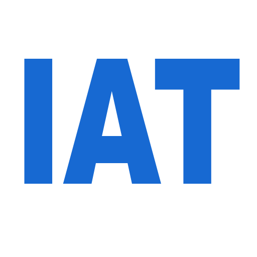
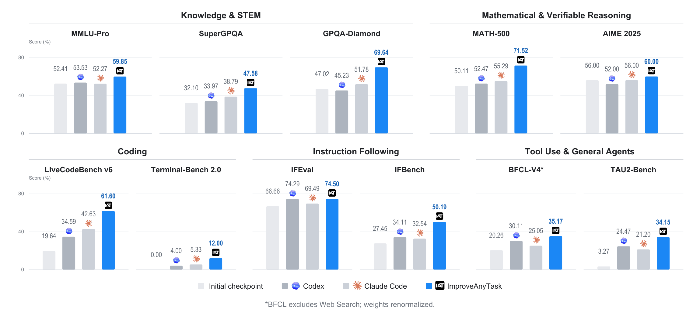
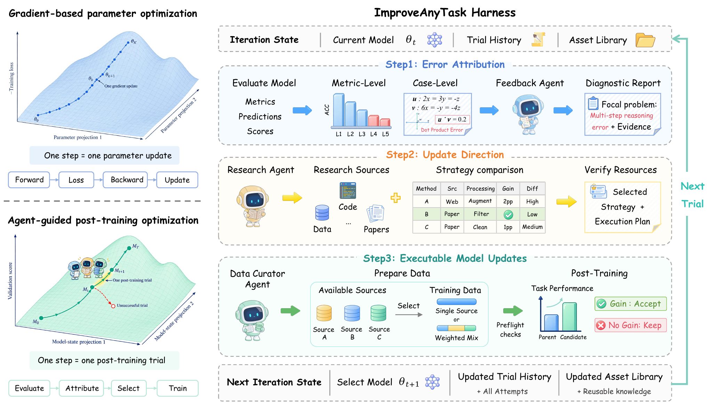
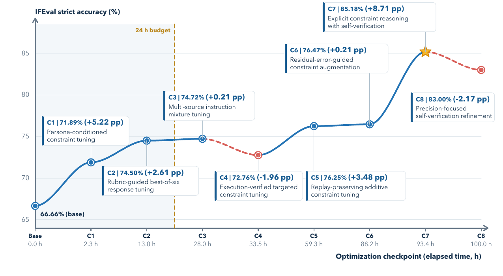
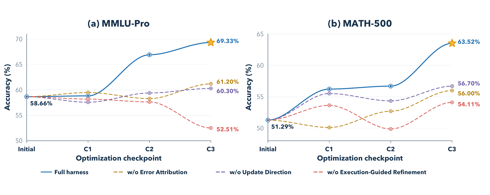

Error Attribution
Combines aggregate metrics with individual failures to identify the highest-impact problem.

ImproveAnyTask
1HKUST(GZ) 2HKUST 3Xiaohongshu Inc.
4ECNU 5ZJU 6NTU
*Equal contribution. †Corresponding authors.
ImproveAnyTask diagnoses model errors, selects research-backed update directions, and executes task-specific post-training within a fixed compute budget.

Method
The harness organizes task adaptation as a repeated evaluation, research, update, and re-evaluation loop.
Combines aggregate metrics with individual failures to identify the highest-impact problem.
Compares research-backed strategies by expected gain, applicability, and reproduction difficulty.
Translates the selected strategy into data and training, with execution checks before full post-training.

Main results
We evaluate Base and Instruct models on knowledge, reasoning, instruction following, coding, tool use, and general-agent tasks.
LiveCodeBench v6 on Qwen3.5-4B-Base.
Knowledge, reasoning, instruction following, coding, and agents.
Qwen3.5-4B-Base and Qwen3.5-4B-Instruct.
Optimization analysis
Extended optimization records both successful updates and regressions, while ablations replace each major module with a basic alternative.


ImproveAnyTask connects diagnosis, research, and post-training in one continuous loop, reducing the manual effort required to improve a model for a specific task.